Tabular and graphical representations for the distributions of two categorical variables
Taught in: Lesson 2.A.1 · Describing Two Categorical Variables
A two-way table of counts for pet and grade, and a bar for each grade split into dog (blue) and cat (orange). The bars all have the same length, so each shows the percent of that grade.
- The cells hold counts. The totals give the number of students in each grade.
- In the first table the percent with a dog is 75% in Grade 9 and 33% in Grade 10: the variables are associated.
- In the second table the percent with a dog is 60% in both grades, even though the counts differ: the variables are not associated.
Compare the distribution of one variable within each level of the other. Different distributions suggest an association; matching distributions suggest none (2.1.A.2, 2.1.A.3).


- 2.1.A.1A two-way table, also called a contingency table, can be used to summarize and compare data for two categorical variables. The entries in the cells of the table can be frequencies (i.e., counts) or relative frequencies (i.e., proportions).
- 2.1.A.2Side-by-side bar charts, segmented bar charts, and mosaic plots are examples of graphs used to display the relationship between two categorical variables. In these graphs, the frequency or relative frequency of each category, or level, of one of the categorical variables is displayed for each category of the other categorical variable.
- 2.1.A.3Graphical representations of two categorical variables can be used to compare the relationship of one categorical variable across the levels of the other categorical variable and determine whether the two variables are associated.
- 2.1.B.1Tabular and graphical representations for the distributions of two categorical variables may reveal information that can be used to justify claims about the variable in context.
Summary statistics for two categorical variables
Taught in: Lesson 2.A.1 · Describing Two Categorical Variables
The same table of $100$ students throughout. A orange outline marks the cell or total used in each calculation; a blue outline marks the row or column that the conditional restricts to.
- The denominator tells the type: the table total for joint and marginal, a row or column total for conditional.
- A conditional relative frequency can be taken by column (Dog given Grade 9) or by row (Grade 9 given Dog); they are different numbers.
- Two conditionals that differ, $0.75$ and $0.33$, are evidence of an association.
Joint: cell $\div$ table total. Marginal: row or column total $\div$ table total. Conditional: cell $\div$ its row or column total. Compare conditional relative frequencies for evidence of association (2.2.A.1, 2.2.A.2, 2.2.A.3, 2.2.B.1).

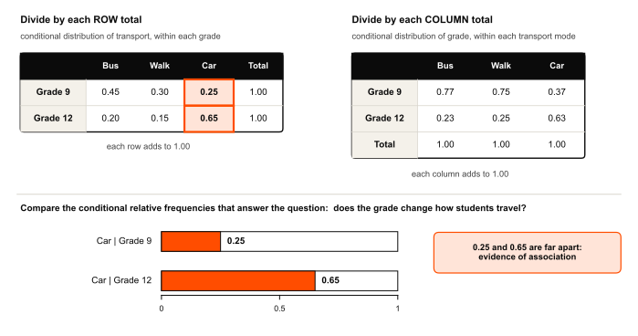
- 2.2.A.1A joint relative frequency in a two-way table is a cell frequency divided by the total for the entire table.
- 2.2.A.2A marginal relative frequency in a two-way table is a row total divided by the total for the entire table or a column total divided by the total for the entire table.
- 2.2.A.3A conditional relative frequency is a relative frequency computed by restricting to a particular level, or category of interest. A conditional relative frequency can be a cell frequency in a row divided by the total for that row or it can be a cell frequency in a column divided by the total for that column.
- 2.2.B.1Summary statistics for two categorical variables can be used to compare distributions for evidence of association between the two variables.
- 2.2.C.1Summary statistics for two categorical variables may reveal information that can be used to justify claims about the variables in context.
Estimating probabilities using simulation
Taught in: Lesson 2.A.2 · Defining Probability
Each curve is one run of the simulation: after each trial it plots the relative frequency of a sum of $7$ so far. The dashed line is the probability $1/6\approx 0.167$, which the simulation estimates.
- With few trials the relative frequency jumps around, and different runs disagree.
- With many trials every run settles close to the same value.
- The simulation never lands exactly on the probability; it gets closer as the number of trials grows.
The relative frequency of an event over many trials estimates its probability. By the law of large numbers, it gets closer and closer to a single value as the number of independent trials increases (2.3.A.5, 2.3.A.6, 2.3.A.7).
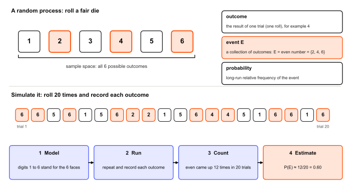
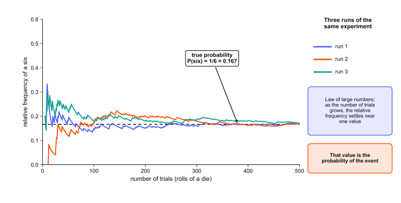
- 2.3.A.1A random process generates results that are determined by chance.
- 2.3.A.2An outcome is the result of one trial of a random process.
- 2.3.A.3An event is a collection of outcomes.
- 2.3.A.4Simulation is a way to model random events such that simulated outcomes closely match real-world outcomes. All possible outcomes are associated with a value to be determined by chance. Record the counts of simulated outcomes and the count total.
- 2.3.A.5The probability of an outcome or event is its long-run relative frequency—that is, its relative frequency over a large number of trials.
- 2.3.A.6The relative frequency of an outcome or event determined from empirical data can be used to estimate the actual, or true, probability of that outcome or event.
- 2.3.A.7The law of large numbers states that for independent trials, as the number of trials increases, the long-run relative frequency of the outcome or event gets closer and closer to a single value.
Introduction to probability
Taught in: Lesson 2.A.2 · Defining Probability
A $6\times 6$ grid: each cell is one outcome of rolling two dice, labeled with the sum. The event $E$ (the sum is $7$) is marked in orange; the other outcomes, its complement, are marked in blue. Then a number line from $0$ to $1$ shows where probabilities can fall.
- The $36$ outcomes are equally likely, so $P(E)$ is the number of outcomes in $E$ over $36$.
- The event and its complement together make up the whole sample space, so their probabilities add to $1$.
- An impossible event has probability $0$ and a certain event has probability $1$.
If the outcomes are equally likely, $P(E)$ is favorable over total. The probability of the sample space is $1$, every probability is between $0$ and $1$, and $P(\text{not }E)=1-P(E)$ (2.4.A.1 to 2.4.A.4).

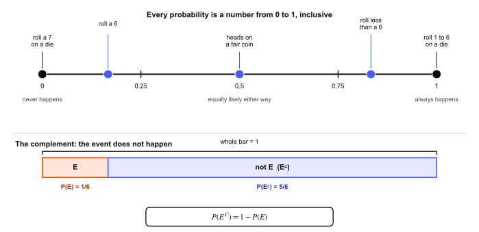
- 2.4.A.1The sample space of a random process is the set of all possible nonoverlapping outcomes. The probability of the sample space is 1.
- 2.4.A.2If all outcomes in the sample space are equally likely, then the theoretical probability an event $E$ will occur is $\dfrac{\text{number of outcomes in event } E}{\text{total number of outcomes in the sample space}}$. The probability of event $E$ occurring is written as $P(E)$.
- 2.4.A.3The probability of an event is a number between 0 and 1, inclusive.
- 2.4.A.4The probability of the complement of an event $E$, which can be written as $E'$, $\overline{E}$, or $E^{C}$ (i.e., the probability of “not $E$”) is equal to $1-P(E)$.
Mutually exclusive events
Taught in: Lesson 2.A.3 · Conditional Probability
The six faces of one die. Faces in event $A$ (an even roll) are marked in blue and faces in event $B$ in orange. A face in both events is marked in both.
- The joint probability $P(A\cap B)$ counts the faces that are in both events.
- If no face is in both, $P(A\cap B)=0$ and the events cannot happen together: they are mutually exclusive.
- If any face is in both, $P(A\cap B)$ is more than $0$, so the events are not mutually exclusive.
$P(A\cap B)$ is the joint probability that both events occur. Mutually exclusive (disjoint) events cannot occur at the same time, so $P(A\cap B)=0$ (2.5.A.1, 2.5.A.2).

- 2.5.A.1The probability that events $A$ and $B$ both will occur, sometimes called the joint probability, is the probability of the intersection of $A$ and $B$. Joint probability is defined as $P(A \text{ intersect } B)$ or $P(A\cap B)$.
- 2.5.A.2Two events are mutually exclusive, or disjoint, if they cannot occur at the same time. This means that if two events are mutually exclusive, then $P(A\cap B)=0$.
Conditional probability (part 1)
Taught in: Lesson 2.A.3 · Conditional Probability, Lesson 2.A.4 · The Multiplication Rule
Each dot is one of $100$ students: dog owners (blue) and cat owners (orange). Grade 9 is the outlined group of four columns. Fainter dots are outside the group being conditioned on.
- Given $B$, only the Grade 9 students are possible: the sample space shrinks from $100$ to $40$.
- $P(A\mid B)$ divides the joint probability by $P(B)$.
- Conditioning on $A$ instead restricts to a different group, so $P(B\mid A)$ is a different number.
$P(A\mid B)=\dfrac{P(A\cap B)}{P(B)}$: the probability that $A$ occurs given that $B$ has occurred (2.6.A.1).
A tree diagram. The first branches show the probability of each pet. The second branches show the conditional probability of the grade given the pet. The orange path is the one being multiplied.
- The second-branch probabilities are conditional: they depend on which first branch was taken.
- The probabilities on each pair of branches add to $1$.
- The product along a path is a joint probability, and the four paths together add to $1$.
General multiplication rule: $P(A\cap B)=P(A)\cdot P(B\mid A)$. On a tree, multiply along the path (2.6.A.2).

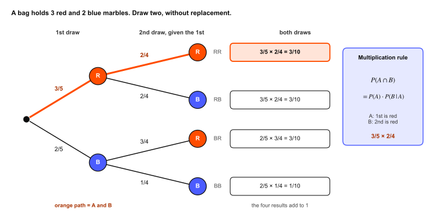
- 2.6.A.1The probability that event $A$ will occur given that event $B$ has occurred is called a conditional probability and is written as $P(A\mid B)$. Conditional probability is defined as $P(A\mid B)=\dfrac{P(A\cap B)}{P(B)}$.
- 2.6.A.2The general multiplication rule states that the probability that events $A$ and $B$ both will occur is equal to the probability that event $A$ will occur multiplied by the conditional probability that event $B$ will occur given that event $A$ has occurred. The multiplication rule is defined as $P(A\cap B)=P(A)\cdot P(B\mid A)$.
Independent events and unions of events
Taught in: Lesson 2.A.5 · Independence & The Addition Rule
A square whose area is $1$. The blue column is event $A$ (width $0.4$). The orange band is event $B$, shown separately inside the $A$ column and outside it. The dashed outline is the union, $A$ or $B$.
- The overlap of the blue column and the orange band is $P(A\cap B)$.
- When $B$ takes the same share of every column, knowing $A$ does not change the probability of $B$: the events are independent.
- The union counts the overlap only once, so the overlap is subtracted.
Independent: $P(B\mid A)=P(B)$ and $P(A\cap B)=P(A)\cdot P(B)$. Union: $P(A\cup B)=P(A)+P(B)-P(A\cap B)$ (2.7.A.1, 2.7.A.3).
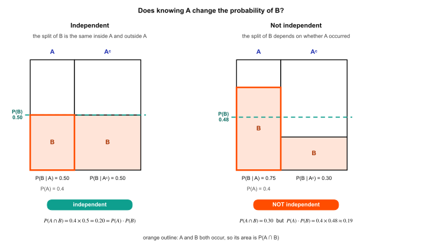
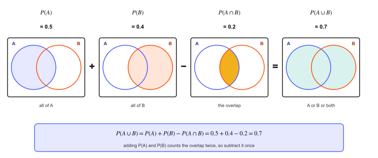
- 2.7.A.1Events $A$ and $B$ are independent if and only if knowing whether event $A$ has occurred (or will occur) does not change the probability that event $B$ will occur. When events $A$ and $B$ are independent, then $P(A\mid B)=P(A)$, $P(B\mid A)=P(B)$, and $P(A\cap B)=P(A)\cdot P(B)$.
- 2.7.A.2The probability that event $A$ or event $B$ (or both) will occur is the probability of $A$ union $B$. The probability of the union is defined as $P(A\cup B)$.
- 2.7.A.3$P(A \text{ union } B)=P(A)+P(B)-P(A \text{ intersect } B)$, or $P(A\cup B)=P(A)+P(B)-P(A\cap B)$.
Introduction to random variables and probability distributions
Taught in: Lesson 2.B.1 · Discrete Random Variables
The eight equally likely outcomes of three flips, each labeled with its value of $X$. Then a table and a bar graph of the probability distribution in blue, and a step graph of the cumulative distribution with $P(X\le 1)$ marked in orange.
- $X$ is a numerical value that results from a random phenomenon: the number of heads in $3$ flips.
- The probabilities of all the values of $X$ add to $1$.
- Each step of the cumulative graph is the sum of the probabilities up to that value.
A random variable takes numerical values by chance. Its distribution lists every value with its probability, and the probabilities sum to $1$. The cumulative distribution gives $P(X\le x)$ (2.8.A.1, 2.8.A.2, 2.8.A.5).

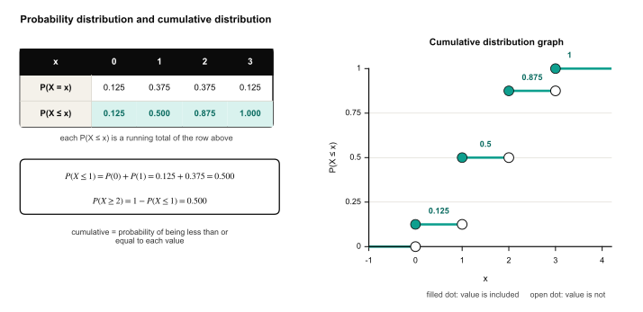
- 2.8.A.1A random variable is a variable whose values have numerical outcomes that result from a random phenomenon.
- 2.8.A.2A probability distribution for a discrete random variable shows the probability associated with every possible value of the random variable. The sum of the probabilities over all possible values of a discrete random variable is 1.
- 2.8.A.3A discrete probability distribution can be determined using the rules of probability or estimated with a simulation.
- 2.8.A.4A discrete probability distribution can be represented as a graph, table, or function showing the probabilities associated with values of a random variable.
- 2.8.A.5A cumulative probability distribution can be represented as a table or function and shows the probability of being less than or equal to each value of the discrete random variable.
Parameters of random variables
Taught in: Lesson 2.B.1 · Discrete Random Variables
A bar graph for $X$, the number of cars sold in a day. The triangle under the axis marks the mean. The bar above the graph spans one standard deviation on each side of the mean.
- The mean is where the distribution balances.
- The standard deviation is a typical distance of the values from the mean.
- Two distributions can have the same mean and different standard deviations.
$\mu_X=E(X)=\sum x\,P(x)$. The standard deviation $\sigma_X$ is a typical distance from $\mu_X$. Interpret both in the context of the situation (2.9.A.2, 2.9.A.3, 2.9.B.1).
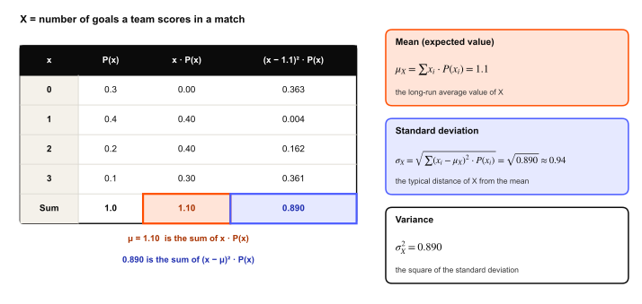
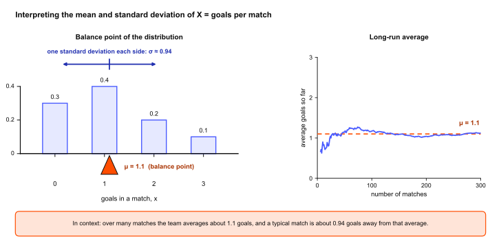
- 2.9.A.1A numerical value measuring a characteristic of a probability distribution of a random variable, or a population, is a parameter. The value of a parameter is a single, fixed value.
- 2.9.A.2The expected value (or mean) of a probability distribution is a parameter and is denoted by $E(X)$ or $\mu_X$. For a discrete random variable $X$, the expected value is calculated as $\mu_X=\sum x_i\cdot P(x_i)$, where $x_i$ is the possible value of the random variable and $P(x_i)$ is the probability of the possible value of the random variable. The expected value can be interpreted as the long-run average outcome of the random variable. The discrete random variable can only take on values that are countable or finite.
- 2.9.A.3The standard deviation of a probability distribution is a parameter represented by $SD(X)$ or $\sigma_X$. For a discrete random variable $X$, the standard deviation is calculated as $\sigma_X=\sqrt{\sum(x_i-\mu_X)^2\cdot P(x_i)}$, where $x_i$ is the possible value of the random variable, $\mu_X$ is the mean, and $P(x_i)$ is the probability of the possible value of the random variable. The standard deviation can be interpreted as the typical deviation of the values of the random variable from the mean value (or expected value) of the random variable over the long run. The square of the standard deviation of a random variable is called the variance of the random variable and is denoted as $V(X)$ or $\sigma_X^{2}$.
- 2.9.B.1The mean and standard deviation for the probability distribution of a discrete random variable should be interpreted in the context of a specific population.
The binomial distribution
Taught in: Lesson 2.B.2 · The Binomial Distribution
Four rows B, I, N and S for each scenario. A green check means the condition holds and a pink cross means it fails.
- Every one of the four conditions must hold.
- Drawing without replacement changes the chance of success, so trials are not independent.
- If the number of trials is not fixed in advance, the count is not binomial.
Check B, I, N and S: two outcomes, independent trials, a fixed number $n$ of trials, and the same probability $p$ of success each time. Then $X\sim\mathrm{Binomial}(n,p)$ (2.10.A.1).
A bar for each possible number of heads in $10$ fair flips. The orange bars are the ones counted in each probability.
- Exactly $3$ is a single bar.
- At most $3$ adds the bars for $0$, $1$, $2$ and $3$.
- At least $3$ is everything except the bars for $0$, $1$ and $2$, so it equals $1-P(X\le 2)$.
Exactly: $P(X=x)=\binom{n}{x}p^{x}(1-p)^{n-x}$. At most: add the bars (binomcdf). At least: $P(X\ge x)=1-P(X\le x-1)$ (2.10.E.1).
Bars show the probability of each number of successes in $n=10$ trials. The dashed orange line marks the mean $np$.
- The mean $np$ moves right as $p$ increases.
- For $p<0.5$ the distribution has a longer right tail; for $p>0.5$, a longer left tail.
- At $p=0.5$ the distribution is symmetric.
For $X\sim\text{Binomial}(n,p)$: $\mu_X=np$ and $\sigma_X=\sqrt{np(1-p)}$ (2.10.B.1).

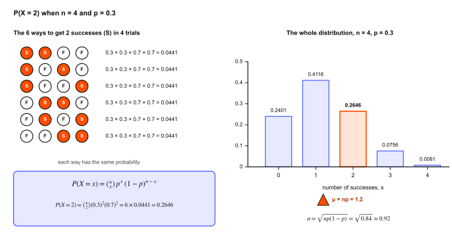
- 2.10.A.1A binomial random variable, X, is a discrete random variable that counts the number of successes in repeated independent trials, n, that have only two possible outcomes (success or failure), with the probability of success p and the probability of failure 1− p.
- 2.10.B.1If a random variable is binomial, its mean, $\mu_X$, is $np$ and its standard deviation, $\sigma_X$, is $\sqrt{np(1-p)}$.
- 2.10.C.1The mean, standard deviation, and probabilities for a binomial distribution should be interpreted in context.
- 2.10.D.1A probability distribution can be constructed using the rules of probability or estimated with a simulation.
- 2.10.E.1The probability that a binomial random variable, $X$, has exactly $x$ successes for $n$ independent trials, when the probability of success is $p$, is calculated as $P(X=x)=\dbinom{n}{x}p^{x}(1-p)^{n-x}$, $x=0,1,2,\ldots,n$. This is called the binomial probability function.
The normal distribution (parts A to D)
Taught in: Lesson 2.B.3 · The Empirical Rule & Standard Normal Curve, Lesson 2.B.4 · Normal Calculations
A bell curve for test scores. The shaded orange area is the probability being found. The second row of numbers under the axis is the $z$-score.
- The mean moves the curve left and right; the standard deviation makes it narrower or wider.
- The area under the curve between two values is the probability of that interval.
- A $z$-score counts standard deviations from the mean, so the same area can be found from the standard normal distribution.
$z=\dfrac{x-\mu}{\sigma}$. Areas give probabilities; to go from an area to a boundary, find $z$ for that area and solve $x=\mu+z\sigma$ (2.11.D.1, 2.11.E.1).
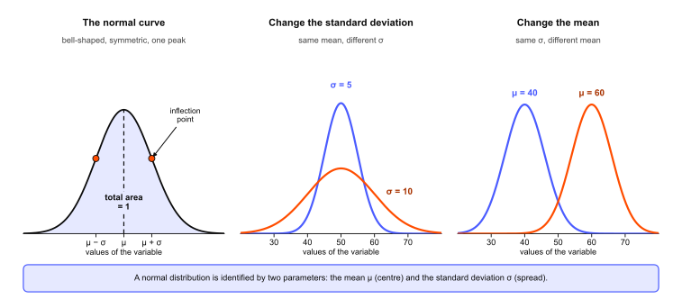


- 2.11.A.1A continuous random variable is a variable that can take on any value within a specified domain. Every interval within the domain has a probability associated with it.
- 2.11.A.2Many continuous random variables are well-modeled by a normal distribution.
- 2.11.A.3A normal distribution can be described as a continuous, unimodal, bell-shaped, and symmetric curve.
- 2.11.A.4A normal curve can be used to model a distribution of data and a continuous random variable.
- 2.11.A.5The normal distribution, or the normal curve, is identified by two parameters, the mean, $\mu$, and the standard deviation, $\sigma$. The smaller the standard deviation, the taller and more concentrated the normal curve is around its mean. The larger the standard deviation, the shorter and less concentrated the normal curve is around its mean.
- 2.11.B.1A standard normal distribution is a normal distribution with mean μ = 0 and standard deviation σ = 1.
- 2.11.C.1The empirical rule can be used to estimate the area of a region under the graph of the normal distribution curve. For a normal distribution, approximately 68% of observations are within 1 standard deviation of the mean, approximately 95% of observations are within 2 standard deviations of the mean, and approximately 99.7% of observations are within 3 standard deviations of the mean. This is called the empirical rule, or the 68–95–99.7 rule.
- 2.11.D.1If the distribution of a random variable is approximately normal, the probability that the random variable takes on values within a particular interval of the random variable is determined by the area under the normal curve within that interval. The total probability or area under the normal curve is 1.
- 2.11.E.1The boundaries of an interval associated with a given area in a normal distribution can be determined using technology or using z-scores and a standard normal table.
- 2.11.E.2Intervals associated with a given area in a normal distribution can be determined by assigning appropriate inequalities to the boundaries of the intervals. To determine the intervals, $p$ is defined as a number between 0 and 100, $x_a$ is the lower bound, and $x_b$ is the upper bound on a normal distribution. 2.11.E.2.i $P(X<x_a)=\dfrac{p}{100}$ means that the lowest $p$% of the values lie to the left of $x_a$. 2.11.E.2.ii $P(x_a<X<x_b)=\dfrac{p}{100}$ means that $p$% of the values lie between $x_a$ and $x_b$. 2.11.E.2.iii $P(X>x_b)=\dfrac{p}{100}$ means that the highest $p$% of the values lie to the right of $x_b$. 2.11.E.2.iv To determine the most extreme $p$% of values on both sides requires dividing the area associated with $p$% into two equal areas on either extreme of the distribution: $P(X<x_a)=\dfrac{1}{2}\left(\dfrac{p}{100}\right)$ and $P(X>x_b)=\dfrac{1}{2}\left(\dfrac{p}{100}\right)$ mean that half of the $p$% most extreme values lie to the left of $x_a$ and half of the $p$% most extreme values lie to the right of $x_b$.
- 2.11.F.1Percentiles and proportions may be used to compare relative positions of individual values within a normal distribution or between normal distributions.
Sampling distributions and the Central Limit Theorem
Taught in: Lesson 2.B.5 · Intro to Sampling Distributions
Each case starts with a population (orange). The computer draws 300 random samples of the same size and records the mean of each one (blue bars). The dashed line is the population mean $\mu$, and the curve is a normal model centered there.
- The bars always center on $\mu$, whatever the population looks like.
- The shape of the population changes the shape of $\bar{x}$ only when $n$ is small.
- As $n$ grows, the means get narrower and closer to normal. The narrowing follows $\sigma/\sqrt{n}$, which you will use in Unit 4.
The central limit theorem: the sampling distribution of a sample mean can be approximated by a normal distribution, and the approximation improves as the sample gets larger (2.12.A.4).
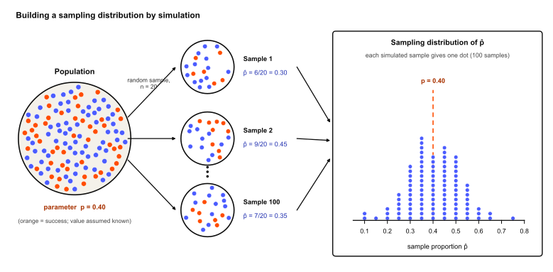
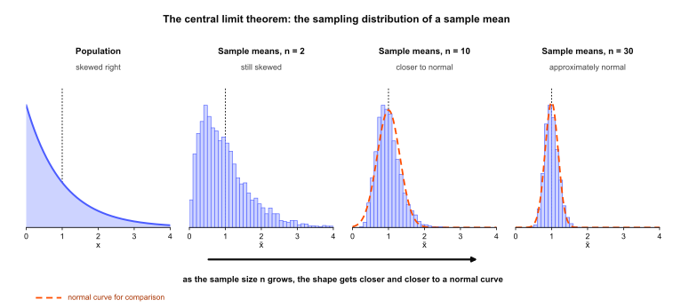

- 2.12.A.1A sampling distribution of a statistic is the distribution of values of the statistic for all possible samples of a given size from a given population.
- 2.12.A.2The sampling distribution of a statistic can be simulated by repeatedly generating a large number of random samples from the population assuming known value(s) for the parameter(s). The value of the statistic is determined and recorded for each sample. The resulting distribution of the sample statistic values approximates the sampling distribution of the statistic.
- 2.12.A.3A randomization distribution is the distribution of a statistic generated by simulation from repeatedly randomly reallocating, or reassigning, the response values to treatment groups. The value of the statistic is determined and recorded for each reallocation, or reassignment. The resulting distribution of the statistic values approximates the sampling distribution of the statistic.
- 2.12.A.4The central limit theorem (CLT) states that the sampling distribution of a mean of a random sample has a shape that can be approximated by a normal distribution. The larger the sample is, the better the approximation will be.